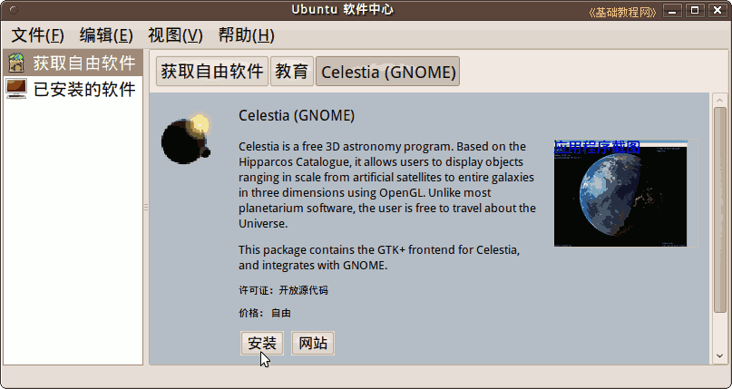

Ubuntu/GNOME 桌面程序指南
作者：TeliuTe 来源：基础教程网
十、软件中心 返回目录 下一课除了系统自带的软件外，自己也可以添加或删除软件；
1、安装软件
1）点菜单 “应用程序 - Ubuntu 软件中心”，打开软件中心；
2）在右侧面板中，点击“教育”图标，打开教育类别软件；
3）在打开的面板中，点击选中“Celestia (GNOME)”，点右边的箭头图标；
4）在出来的面板中，点“安装”按钮，可以看一下软件介绍和截图；

5）出来一个认证对话框，输入自己的密码，点“授权”；
6）安装好以后，可以在“应用程序 - 教育”中打开它；
2、移除软件
1）点菜单“应用程序 - Ubuntu 软件中心”，再点“教育 - Celestia (GNOME)”，点击右侧的箭头，进入软件介绍；
2）点“移除”按钮，输入自己的密码后，开始删除这个软件；

3）稍候完成卸载，这个软件就被删除掉了；
本节学习了Ubuntu 软件中心的基础知识，如果你成功地完成了练习，请继续学习下一课内容；
本教程由86团学校TeliuTe制作|著作权所有
基础教程网：http://teliute.org/
美丽的校园……
转载和引用本站内容，请保留版权信息和本站链接。